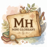

MH Wilds小詞庫
menu

MHWilds小詞庫
light_mode
home
主頁
menu_book
綜合詞彙
event_available
活動任務
swords
技能資料
diamond
飾珠資料
music_cast
狩獵笛
pets
魔物資料
bug_report
獵蟲
award_meal
貓飯技能
magic_button
護石
grocery
調合配方
money_bag
背包小幫手
crown
大小金記錄
favorite
管理書簽
database
Readme
遊戲版本﹕魔物獵人荒野
Aug 2026 by Hunter Po
Last update: Aug 2026